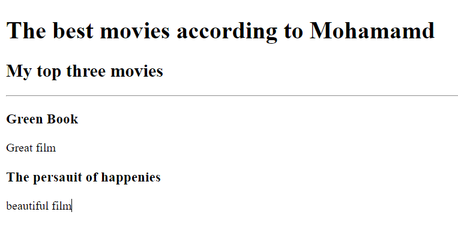
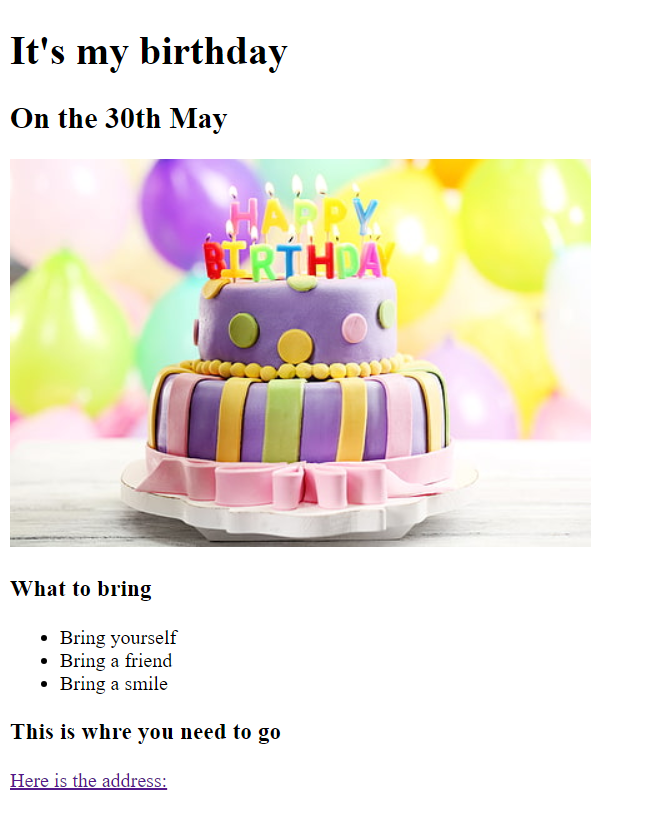

<!-- TODO 1: Create the HTML Boilerplate -->

<htlm>
    <head>
        <meta charset="UTF-8">
        <title>My Project Portfolio</title>
    </head>
    <body>
        <h1>Mohammad Faqusa's Portfolio</h1>
        <h2>I am a Web Developer </h2>
        <hr/> 
        
        <a href="./../../../section2html_introduction/16projectMovieRanking/2.4 Movie Ranking Project/index.html"><h3>Movie Ranking Project</h3></a>
         
        <a href="./../../../section3IntermediateHTML/22projectBirthday/3.4 Birthday Invite Project/index.html"><h3>birthday</h3></a>
         
        <a href="./public/about.html"><h3>about me</h3></a>

    </body>
</htlm>
<!-- TODO 2: Add Your previous projects' HTML into the public folder -->

<!-- TODO 3: Take screenshots of your project previews and add the images to the images folder -->

<!-- TODO 4: Add titles/subtitles etc. -->

<!-- TODO 5: Add a link to the project pages -->

<!-- TODO 6: Add images to show the project previews
HINT for TODO 6: You can use the height attribute set to 200 to make the image smaller:
https://developer.mozilla.org/en-US/docs/Web/HTML/Element/img#attr-height -->

<!-- TODO 7: Add the Contact Me and About Me page links -->